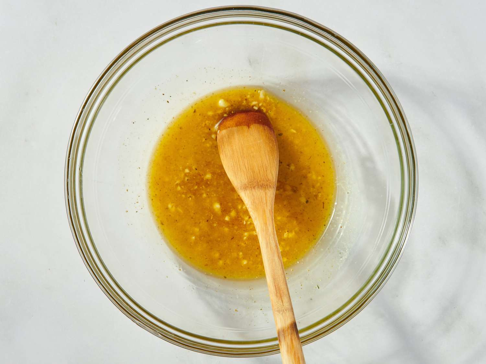
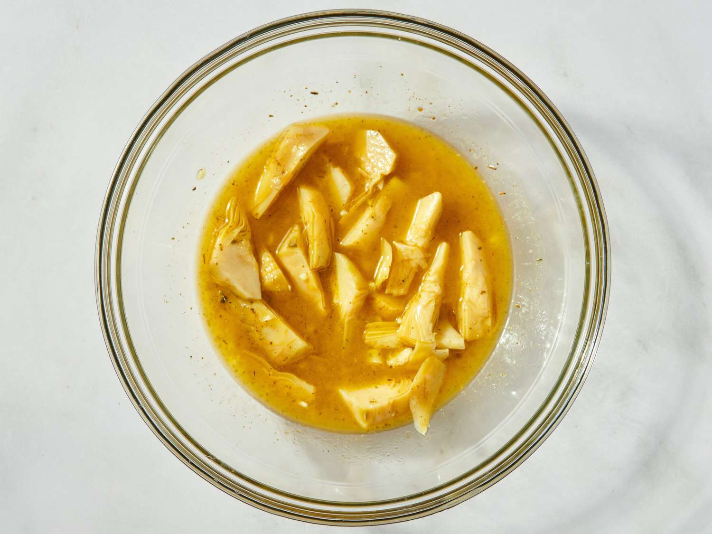
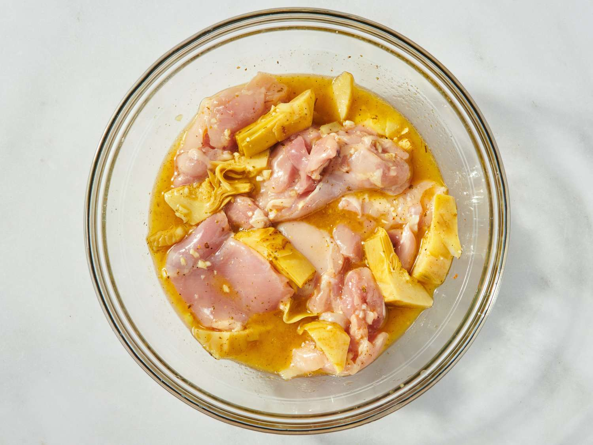
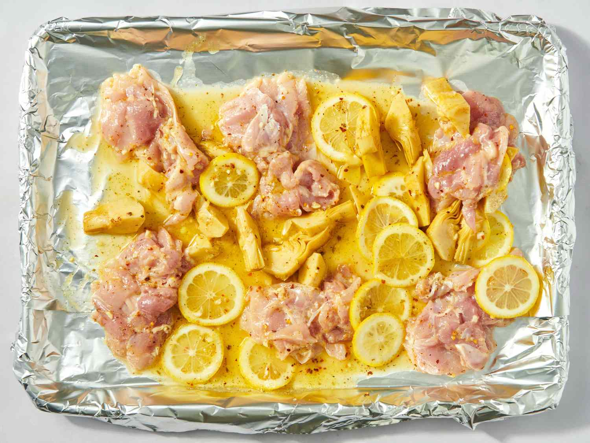
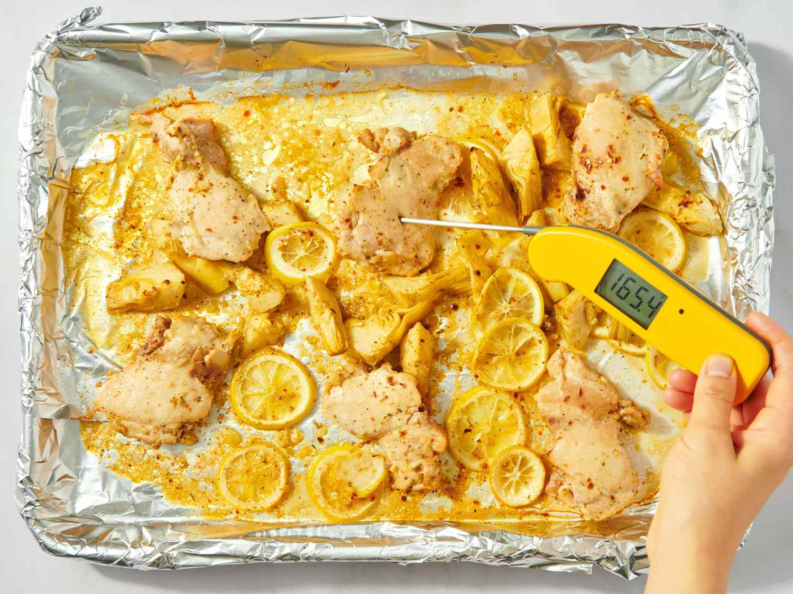
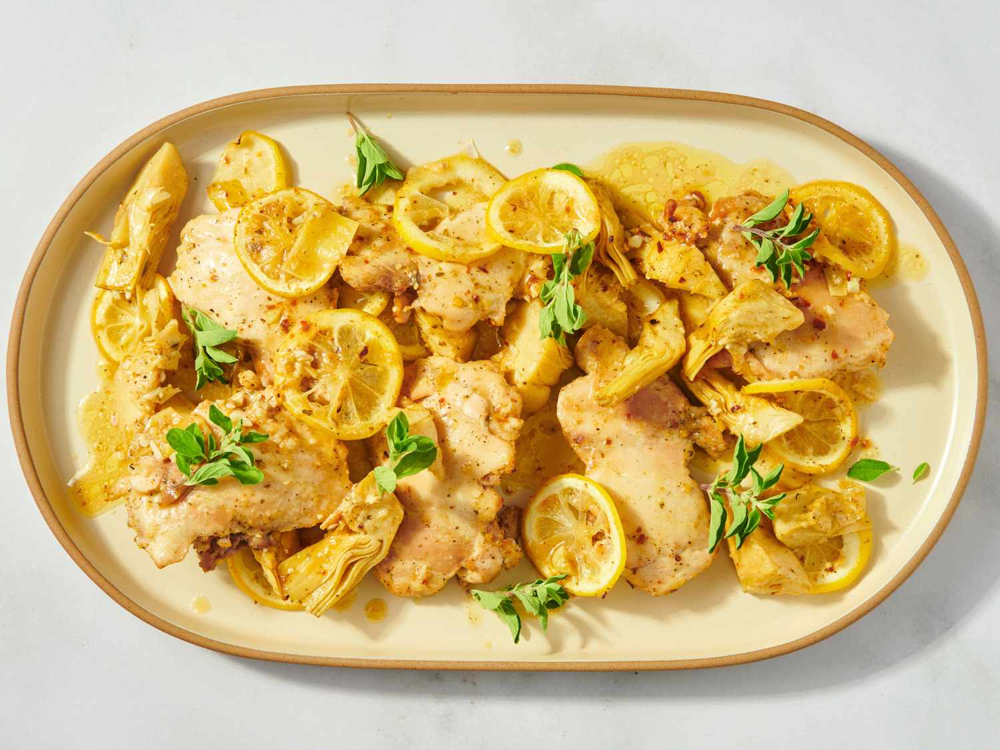

Sheet Pan Lemon Artichoke Chicken Thighs

These sheet pan lemon artichoke chicken thighs are so easy to prep. Take advantage of the seasoned marinade in the artichokes, add a little garlic, a little Greek seasoning, and a bit of honey to build flavor in roasted boneless, skinless chicken thighs.
10 mins
30 mins
40 mins
4
Ingredients
- ¼ cup melted butter
- 2 tablespoons honey
- 4 cloves garlic, minced
- 1 teaspoon salt-free Greek seasoning
- 1 (12 ounce) jar marinated artichoke hearts
- 6 skinless, boneless chicken thighs
- 1 lemon, thinly sliced
- ½ teaspoon red pepper flakes (optional)
- salt and freshly ground black pepper to taste
- fresh oregano sprigs for garnish (optional)
Directions
Step 1
Gather all ingredients. Preheat the oven to 400 degrees F (200 degrees C) and line a sheet pan with aluminum foil.

Step 2
In a large bowl, combine melted butter, honey, minced garlic, and Greek seasoning, and stir.

Step 3
If whole, cut artichoke hearts into halves or quarters, and add them along with ⅓ cup of their marinade to the bowl.

Step 4
Pat chicken thighs dry, and add to the artichoke mixture.

Step 5
Stir in lemon slices and red pepper flakes. Season with salt and pepper; pour contents of the bowl into the prepared sheet pan. Spread evenly into a single layer, with cut side of the thighs up.

Step 6
Place in the preheated oven and bake about 15 minutes, then turn chicken and baste with pan juices. Continue baking for an additional 15 minutes, or until the chicken tests 165º on an instant-read thermometer.

Step 7
Drizzle chicken and artichokes with pan juices, garnish with fresh oregano, and serve.

Nutrition Facts (per serving)
790
Calories
50g
Fat
42g
Carbs
57g
Protein